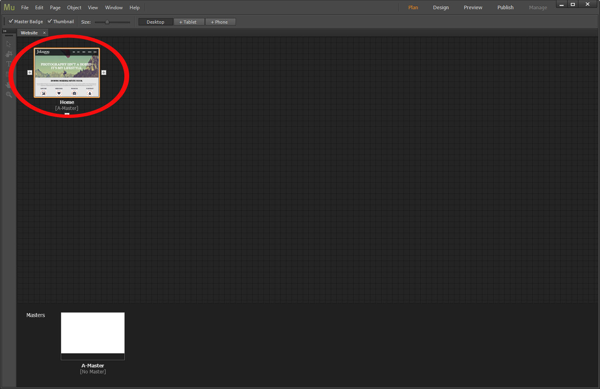
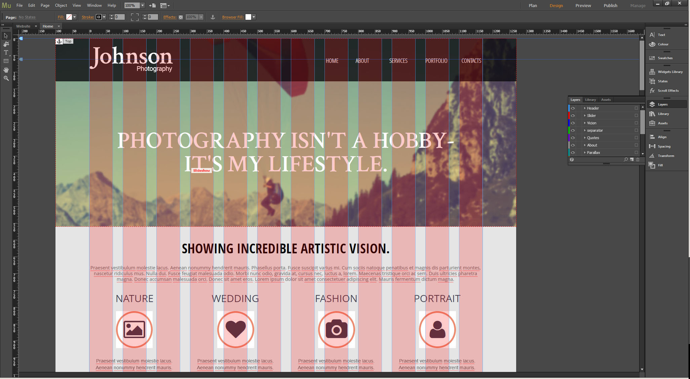
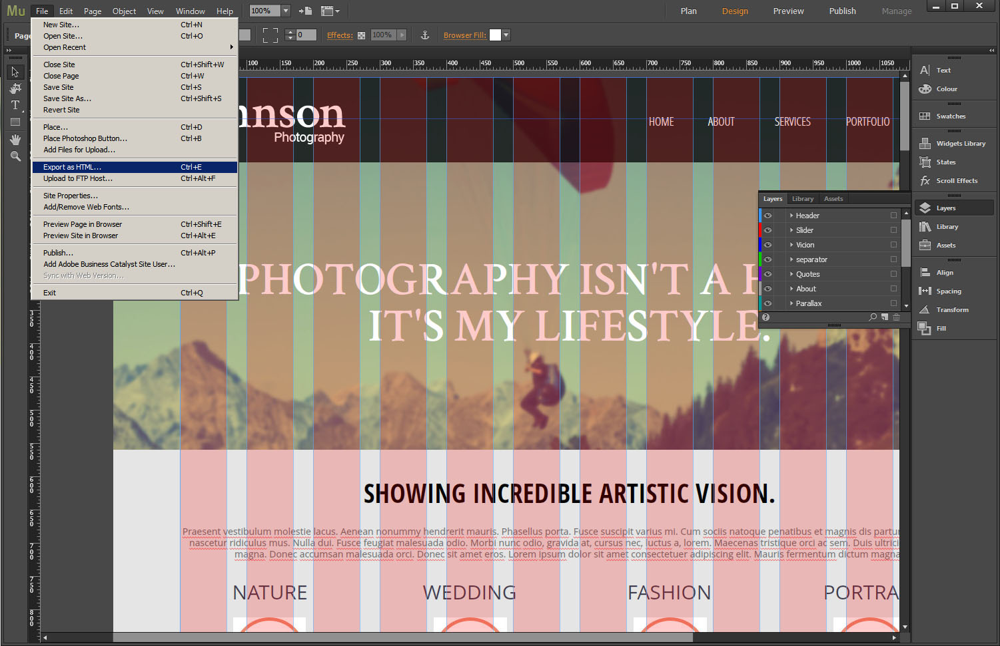

Introduction What can be found in this package and what it can be used for
Thank you for purchasing an email template from our company. This manual will show you how to work with your template and how to edit it.
All pages content is made with Adobe Muse.
Unzipping Template Package
After unzipping the template package you will find 4 folders: "documentation", "screenshots", "HTML", "AdobeMuse";. You can also see a zip archive called "sources_############.zip" that you need to unzip.
The sources package contains all source files for the template. The package is password protected and can be extracted only with WinZip (Windows OS) and StuffitExpander (MAC OS) software.
You can download both applications for free using the free trial options:
While unzipping "sources_############.zip" archive you will be prompted to enter a password, which you can find at your Product Download Page (open the link in the email you received from our company).
As soon as you are done with the unzipping the template you should have 5 folders in total: "documentation", "screenshots", "HTML", "AdobeMuse", "sources".
Files and Folders Architecture
The file structure of the essential files and folders looks the following way:
- documentation – contains documentation on template editing.
- HTML - contains files for HTML version of the template.
- AdobeMuse - contains source file for Adobe Muse application.
- sources - contains source files.
- psd - contains Adobe Photoshop .psd files.
- fonts_info.txt - contains the list of fonts used in template.
- info.txt - contains the information about password protected "sources" folder.
Editing template
Editing HTML
All editable HTML files are located in folders of the template package (index.html). To be able to edit the file, you'll need some knowledge of these languages: HTML, CSS. You will also need to use an editor. Notepad (for Windows) is the simplest kind of editor that will open all the above file types. However, it's not convenient for editing, so you'd better get one of the following editors:
- SublimeText http://www.sublimetext.com/
- Dreamweaver https://creative.adobe.com/products/dreamweaver
- Notepad++ http://notepad-plus-plus.org/
Editing PSD files
PSD files are located in the "sources/psd" folder in your template package. PSD are the source files of the template design. They are divided into layers so any part of the template design can be changed.
During the customization process you can refer to the PSD files in order to change the images used in the content pages or in the design.

You can learn more about working with photoshop by checking the detailed tutorials.
AdobeMuse integration
- 1. Go to http://muse.adobe.com/, download and install Adobe Muse.
- 2. Start the application, open the *.muse file and doubleclick the template icon. 
- 3. In the opening window you can edit the design according to your needs. All the blocks are divided into layers, each block can be moved, hidden or removed. Feel free to check the detailed information on working with Adobe Muse on the official tutorial website. 
- 4. After making changes and saving the project, you can make the HTML export. Navigate to the Files menu item, choose Export as HTML.... Enter the sitename and the name of the folder where the export needs to be done. That's it! 
{kind=link}
{kind=link}
{kind=link}
Usefull links
Addendum where to get help, support and additional information
We hope this manual was useful for you and helped you to install, edit the template and to resolve your issues.